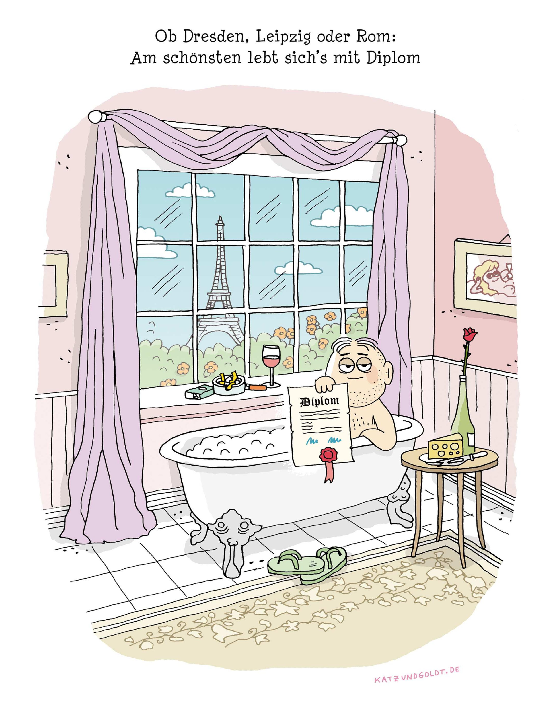

Für Nikolai
Ohne dich und Nikolai hätte ich nie von Sternprodukten gehört, und meine Diplomarbeit — Deformationsquantisierung, Stetigkeit von Sternprodukten — wäre nie meine geworden.
Nikolai Neumaier, 1971–2010. Klassifikation in der Deformationsquantisierung, die Fedosov-Konstruktion, zuletzt mit dir zusammen die Poisson-Strukturen auf Lie-Algebroiden — ihr beide ein gut eingespieltes Gespann im Lehrstuhl von Hartmann Römer. Möge er in Frieden ruhen. Was jetzt kommt, ist auch für ihn.
wie früher, ohne Datum
und das Metallica-Shirt
— Erinnerung, nicht datiert
Woran ihr angeschlossen habt
Was in eurer Zeit alles passiert ist
ohne Datum
Der achte Stock
Speckis O’Caml steht im Handbuch
Das WHIZARD-Handbuch führt ihn als Autor, Universität Freiburg, neben Kilian in Siegen, Ohl in Würzburg und Reuter am DESY. Der Matrixelement-Generator O’Mega ist in O’Caml geschrieben — weil das Erzeugen von Streuamplituden dem Bau eines optimierenden Compilers ähnelt.
Und in der Danksagung von O’Mega steht ein Dank an die Caml-Leute bei INRIA — für eine Sprache, die die Intelligenz des Programmierers nicht beleidigt.
Vier Schwänke
Ich fuhr die harte Neo-Variante — und habe dafür an der Bürotastatur tatsächlich die Tasten umgestöpselt. Physisch, abgezogen und neu gesteckt. Wer sich danach an den Rechner setzte, hatte ein Problem.
Eines Morgens stand die Uhr meines Bürolaptops im Institut auf iranischer Ortszeit. Ein Schelm, wer Böses dabei denkt ;)
Zwei Wochen vor Abgabe habe ich meinen ge-LaTeX-ten Entwurf gelöscht. Aus Versehen. Unser Admin hat ihn aus den Tiefen des Dateisystems wieder herausgefischt.
Und der legendäre Bierkorb: ein alter Fahrradkorb, mit dem im Bächle Hopfenkaltschalen gekühlt wurden. Freiburger Ingenieurskunst.
Welches Dateisystem war das?
Um 2010 lief in einem Institut fast sicher ext3. Und deshalb ist „aus den Tiefen gefischt“ genau das richtige Wort: ext3 nullt beim Löschen die Blockzeiger im Inode. Die Datei liegt noch da — nur weiß niemand mehr, wo.
Der Rettungsweg führt über das Journal: dort liegt oft noch eine ältere Fassung des Inodes, mitsamt Zeigern. Genau dafür gab es ext3grep — und es funktionierte nur, wenn schnell genug niemand mehr schrieb.
Props und Kudos an die Gang aus dem CIP-Pool im Mie-Haus. Den Pool gibt es übrigens noch — inzwischen mit eigener Domain.
Die letzte Seite
Dieses Bild stand am Ende meiner gebundenen Diplomarbeit.
Inzwischen: Neuruppin, die Platte im WK 3, ans Reiz.

Das Zeichen, um das es geht
Moyal-Produkt, führende Ordnung. Dasselbe ⋆ℎ — nur das \(\hbar\) sitzt jetzt tiefer und trägt einen Firmennamen.
Drei Register für ein Zeichen
Die Bleistift-Skizze — Ursprung von allem, ungesetzt, nie neu gezeichnet.
Dieselbe Notation wie eben auf der Formel-Folie — gesetzt, versionierbar, reines ASCII in der Quelle.
Die Näherung für überall dort, wo nur noch Text geht — E-Mail, Dateinamen, die Kommandozeile.
Kehrwert der Feinstrukturkonstante, mit einem Augenzwinkern in Richtung Diskordianismus untergebracht. Genau eine solche Spielerei pro Dokument — diese Folie ist ihr Platz in dieser Präsentation.
Von der Deformationsquantisierung in die Prignitz
Ich berate heute vor allem zu Hanf und Naturschutz, in und um die Prignitz — Feldbegehungen, Förderanträge, Karten.
Die Mathematik ist nicht weg. Sie taucht nur seltener auf — im Namen, in der 137, in einem ⋆ℎ mitten in der E-Mail-Adresse.